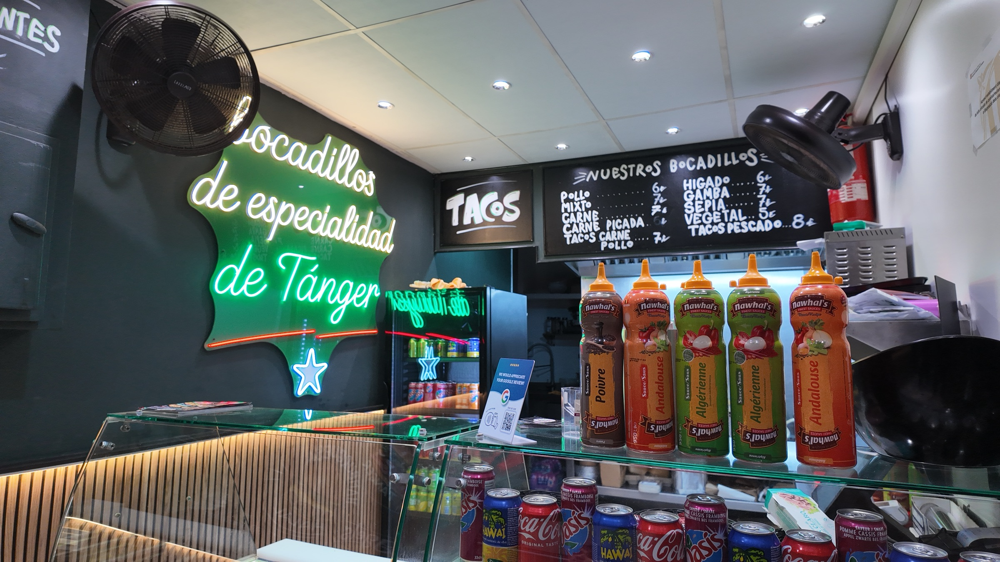

01
Bocadillo
6,00 €
Comida callejera de TángerHalalLloret de Mar
بوكاديو طنجاوي
Bocadillos, paninis, pasticcio, tacos y durum de pollo o de carne. Todo halal y hecho al momento, en el Carrer del Rector Coch.
01 · Tánger × España
En el norte de Marruecos, al bocadillo se le llama bocadillo. بوكاديو.
La palabra cruzó el Estrecho y se quedó en el habla de Tánger, como maticha para el tomate o qamroun para las gambas. Allí el bocadillo es comida de calle: una barra abierta a lo largo, relleno generoso, salsa y a comer de pie.
Bocadillo A40 lo trae a Lloret tal cual: sabor callejero, calidad de verdad. Todo halal y hecho al momento, en un local pequeño, limpio y algo escondido en el centro de Lloret.

02 · Anatomía de un bocadillo
Elige un bocadillo y míralo por dentro: qué lleva, cómo se dice en darija y de dónde viene cada ingrediente. Todos en barra, con la salsa de la casa.
01
6,00 €
04 · El local
Arrastra o usa las flechas
05 · De la puerta al mostrador
«El mejor sitio de bocadillos de Lloret con diferencia, se ve limpio y genial en calidad precio.»
Angeles · reseña en Google
«Todo muy limpio, se nota que la comida es de buena calidad.»
Gerard · reseña en Google
«Súper bueno todo, mucha limpieza y también muy amables al atenderte. Se los recomiendo 1000%.»
Jesús · reseña en Google
«Buen sitio para comer un bocadillo rico, sano y barato, además de rápido.»
Reseña en Google
«El local es pequeño, ¡pero eso no importa! La comida está buenísima, el sabor es increíble y se nota la calidad.»
Reseña en Google
06 · Visítanos
| Martes | 12:00 – 24:00 |
|---|---|
| Miércoles | 12:00 – 24:00 |
| Jueves | 12:00 – 24:00 |
| Viernes | 12:00 – 24:00 |
| Sábado | 12:00 – 24:00 |
| Domingo | 12:00 – 24:00 |
| Lunes | Cerrado |